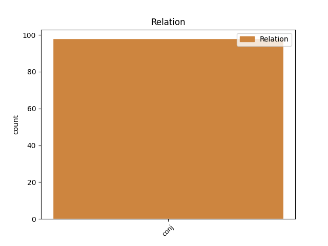
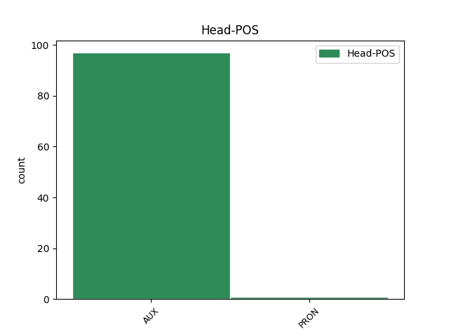
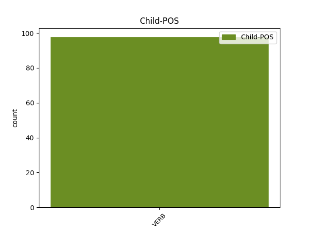

Distribution of features within this leaf



Agreement Rules sorted by frequency.
- When the dependent token is the conjunct(conj) of the head token, and the head token is AUX and the dependent token is VERB.
1 מיקי _ _ _ _ 0 _ _ _
2 ברקוביץ _ _ _ _ 0 _ _ _
3 היה _ AUX AUX Gender=Masc|Number=Sing|Person=3|Polarity=Pos|Tense=Past|VerbType=Cop 0 _ _ _
4 נהדר _ _ _ _ 0 _ _ _
5 ו _ _ _ _ 0 _ _ _
6 סחף סחף VERB VERB Gender=Masc|HebBinyan=PAAL|Number=Sing|Person=3|Tense=Past|Voice=Act 3 conj _ _
7 את _ _ _ _ 0 _ _ _
8 ראשון _ _ _ _ 0 _ _ _
9 ל _ _ _ _ 0 _ _ _
10 ציון _ _ _ _ 0 _ _ _
11 ל _ _ _ _ 0 _ _ _
12 ה_ _ _ _ _ 0 _ _ _
13 ניצחון _ _ _ _ 0 _ _ _
14 ה _ _ _ _ 0 _ _ _
15 גדול _ _ _ _ 0 _ _ _
16 . _ _ _ _ 0 _ _ _
Disagree Examples:
1 אולם _ _ _ _ 0 _ _ _
2 ה _ _ _ _ 0 _ _ _
3 תגובה _ _ _ _ 0 _ _ _
4 אינה _ _ _ _ 0 _ _ _
5 צריכה צריך AUX AUX Gender=Fem|Number=Sing|Person=1,2,3|VerbType=Mod 0 _ _ _
6 להיות _ _ _ _ 0 _ _ _
7 מוגבלת _ _ _ _ 0 _ _ _
8 רק _ _ _ _ 0 _ _ _
9 כלפי _ _ _ _ 0 _ _ _
10 ה _ _ _ _ 0 _ _ _
11 ערבים _ _ _ _ 0 _ _ _
12 ; _ _ _ _ 0 _ _ _
13 תנועת _ _ _ _ 0 _ _ _
14 " _ _ _ _ 0 _ _ _
15 כך _ _ _ _ 0 _ _ _
16 " _ _ _ _ 0 _ _ _
17 האשימה האשים VERB VERB Gender=Fem|HebBinyan=HIFIL|Number=Sing|Person=3|Tense=Past|Voice=Act 5 conj _ SpaceAfter=No
18 , _ _ _ _ 0 _ _ _
19 תיכף _ _ _ _ 0 _ _ _
20 ו _ _ _ _ 0 _ _ _
21 מיד _ _ _ _ 0 _ _ _
22 , _ _ _ _ 0 _ _ _
23 ב _ _ _ _ 0 _ _ _
24 הודעה _ _ _ _ 0 _ _ _
25 רשמית _ _ _ _ 0 _ _ _
26 , _ _ _ _ 0 _ _ _
27 את _ _ _ _ 0 _ _ _
28 ה _ _ _ _ 0 _ _ _
29 ממשלה _ _ _ _ 0 _ _ _
30 , _ _ _ _ 0 _ _ _
31 ה _ _ _ _ 0 _ _ _
32 כנסת _ _ _ _ 0 _ _ _
33 , _ _ _ _ 0 _ _ _
34 בית _ _ _ _ 0 _ _ _
35 ה _ _ _ _ 0 _ _ _
36 משפט _ _ _ _ 0 _ _ _
37 ו _ _ _ _ 0 _ _ _
38 ה _ _ _ _ 0 _ _ _
39 תקשורת _ _ _ _ 0 _ _ _
40 ב _ _ _ _ 0 _ _ _
41 " _ _ _ _ 0 _ _ _
42 רצח _ _ _ _ 0 _ _ _
43 אופי _ _ _ _ 0 _ _ _
44 " _ _ _ _ 0 _ _ _
45 של _ _ _ _ 0 _ _ _
46 מאיר _ _ _ _ 0 _ _ _
47 כהנא _ _ _ _ 0 _ _ _
48 . _ _ _ _ 0 _ _ _
1 זה _ _ _ _ 0 _ _ _
2 היה היה AUX AUX Gender=Masc|Number=Sing|Person=3|Polarity=Pos|Tense=Past|VerbType=Cop 0 _ _ _
3 עצוב _ _ _ _ 0 _ _ _
4 : _ _ _ _ 0 _ _ _
5 בעצם _ _ _ _ 0 _ _ _
6 יש _ _ _ _ 0 _ _ _
7 ל_ _ _ _ _ 0 _ _ _
8 _הוא _ _ _ _ 0 _ _ _
9 סיבה _ _ _ _ 0 _ _ _
10 להאמין _ _ _ _ 0 _ _ _
11 ב _ _ _ _ 0 _ _ _
12 ה_ _ _ _ _ 0 _ _ _
13 חיים _ _ _ _ 0 _ _ _
14 ו _ _ _ _ 0 _ _ _
15 ב _ _ _ _ 0 _ _ _
16 ה_ _ _ _ _ 0 _ _ _
17 אדם _ _ _ _ 0 _ _ _
18 ו _ _ _ _ 0 _ _ _
19 ב _ _ _ _ 0 _ _ _
20 ה_ _ _ _ _ 0 _ _ _
21 טוב _ _ _ _ 0 _ _ _
22 , _ _ _ _ 0 _ _ _
23 אמרנו אמר VERB VERB Gender=Fem,Masc|HebBinyan=PAAL|Number=Plur|Person=1|Tense=Past|Voice=Act 2 conj _ _
24 ל_ _ _ _ _ 0 _ _ _
25 _הוא _ _ _ _ 0 _ _ _
26 , _ _ _ _ 0 _ _ _
27 אבל _ _ _ _ 0 _ _ _
28 תדיאוש _ _ _ _ 0 _ _ _
29 פנקייביץ _ _ _ _ 0 _ _ _
30 הגיב _ _ _ _ 0 _ _ _
31 ב _ _ _ _ 0 _ _ _
32 תנועה _ _ _ _ 0 _ _ _
33 של _ _ _ _ 0 _ _ _
34 ביטול _ _ _ _ 0 _ _ _
35 : _ _ _ _ 0 _ _ _
36 מיתוס _ _ _ _ 0 _ _ _
37 , _ _ _ _ 0 _ _ _
38 אמר _ _ _ _ 0 _ _ _
39 , _ _ _ _ 0 _ _ _
40 הכל _ _ _ _ 0 _ _ _
41 מיתוס _ _ _ _ 0 _ _ _
42 . _ _ _ _ 0 _ _ _
1 לאורך _ _ _ _ 0 _ _ _
2 כל _ _ _ _ 0 _ _ _
3 ה _ _ _ _ 0 _ _ _
4 דרך _ _ _ _ 0 _ _ _
5 הקפדתי _ _ _ _ 0 _ _ _
6 לא _ _ _ _ 0 _ _ _
7 לדכא _ _ _ _ 0 _ _ _
8 את _ _ _ _ 0 _ _ _
9 ה _ _ _ _ 0 _ _ _
10 רוח _ _ _ _ 0 _ _ _
11 , _ _ _ _ 0 _ _ _
12 ללא _ _ _ _ 0 _ _ _
13 פאתוס _ _ _ _ 0 _ _ _
14 מיותר _ _ _ _ 0 _ _ _
15 , _ _ _ _ 0 _ _ _
16 אבל _ _ _ _ 0 _ _ _
17 להרטיט _ _ _ _ 0 _ _ _
18 את _ _ _ _ 0 _ _ _
19 ה _ _ _ _ 0 _ _ _
20 נפש _ _ _ _ 0 _ _ _
21 זה _ _ _ _ 0 _ _ _
22 היה היה AUX AUX Gender=Masc|Number=Sing|Person=3|Polarity=Pos|Tense=Past|VerbType=Cop 0 _ _ _
23 תפקיד_ _ _ _ _ 0 _ _ _
24 _של_ _ _ _ _ 0 _ _ _
25 _אני _ _ _ _ 0 _ _ _
26 , _ _ _ _ 0 _ _ _
27 ו _ _ _ _ 0 _ _ _
28 אני _ _ _ _ 0 _ _ _
29 הזדהיתי הזדהה VERB VERB Gender=Fem,Masc|HebBinyan=HITPAEL|Number=Sing|Person=1|Tense=Past 22 conj _ _
30 עם_ _ _ _ _ 0 _ _ _
31 _הוא _ _ _ _ 0 _ _ _
32 , _ _ _ _ 0 _ _ _
33 ו _ _ _ _ 0 _ _ _
34 זה _ _ _ _ 0 _ _ _
35 תוכן _ _ _ _ 0 _ _ _
36 סיפור_ _ _ _ _ 0 _ _ _
37 _של_ _ _ _ _ 0 _ _ _
38 _אני _ _ _ _ 0 _ _ _
39 . _ _ _ _ 0 _ _ _
1 כ _ _ _ _ 0 _ _ _
2 תוצאה _ _ _ _ 0 _ _ _
3 מ _ _ _ _ 0 _ _ _
4 כך _ _ _ _ 0 _ _ _
5 גדל _ _ _ _ 0 _ _ _
6 נפח_ _ _ _ _ 0 _ _ _
7 _של_ _ _ _ _ 0 _ _ _
8 _הוא _ _ _ _ 0 _ _ _
9 , _ _ _ _ 0 _ _ _
10 ו _ _ _ _ 0 _ _ _
11 ה _ _ _ _ 0 _ _ _
12 עסק _ _ _ _ 0 _ _ _
13 עלול עלול AUX AUX Gender=Masc|Number=Sing|Person=1,2,3|VerbType=Mod 0 _ _ _
14 להתפוצץ _ _ _ _ 0 _ _ _
15 ; _ _ _ _ 0 _ _ _
16 כל _ _ _ _ 0 _ _ _
17 אחד _ _ _ _ 0 _ _ _
18 יחפש חיפש VERB VERB Gender=Masc|HebBinyan=PIEL|Number=Sing|Person=3|Tense=Fut|Voice=Act 13 conj _ _
19 ל _ _ _ _ 0 _ _ _
20 עצמו _ _ _ _ 0 _ _ _
21 את _ _ _ _ 0 _ _ _
22 דרכי _ _ _ _ 0 _ _ _
23 ה _ _ _ _ 0 _ _ _
24 ביטוי _ _ _ _ 0 _ _ _
25 של_ _ _ _ _ 0 _ _ _
26 _הוא _ _ _ _ 0 _ _ _
27 , _ _ _ _ 0 _ _ _
28 ו _ _ _ _ 0 _ _ _
29 אולי _ _ _ _ 0 _ _ _
30 יחשוב _ _ _ _ 0 _ _ _
31 ש _ _ _ _ 0 _ _ _
32 רק _ _ _ _ 0 _ _ _
33 הוא _ _ _ _ 0 _ _ _
34 יכול _ _ _ _ 0 _ _ _
35 להציל _ _ _ _ 0 _ _ _
36 את _ _ _ _ 0 _ _ _
37 ה _ _ _ _ 0 _ _ _
38 עולם _ _ _ _ 0 _ _ _
39 . _ _ _ _ 0 _ _ _
1 ה _ _ _ _ 0 _ _ _
2 סופרים _ _ _ _ 0 _ _ _
3 עשויים עשוי AUX AUX Gender=Masc|Number=Plur|Person=1,2,3|VerbType=Mod 0 _ _ _
4 להיות _ _ _ _ 0 _ _ _
5 מנוסים _ _ _ _ 0 _ _ _
6 ו _ _ _ _ 0 _ _ _
7 מחוכמים _ _ _ _ 0 _ _ _
8 , _ _ _ _ 0 _ _ _
9 ו _ _ _ _ 0 _ _ _
10 יתגלו התגלה VERB VERB Gender=Fem,Masc|HebBinyan=HITPAEL|Number=Plur|Person=3|Tense=Fut 3 conj _ _
11 ב _ _ _ _ 0 _ _ _
12 אנושיות_ _ _ _ _ 0 _ _ _
13 _של_ _ _ _ _ 0 _ _ _
14 _הם _ _ _ _ 0 _ _ _
15 דווקא _ _ _ _ 0 _ _ _
16 לנוכח _ _ _ _ 0 _ _ _
17 ה _ _ _ _ 0 _ _ _
18 פרס _ _ _ _ 0 _ _ _
19 ה _ _ _ _ 0 _ _ _
20 גדול _ _ _ _ 0 _ _ _
21 . _ _ _ _ 0 _ _ _